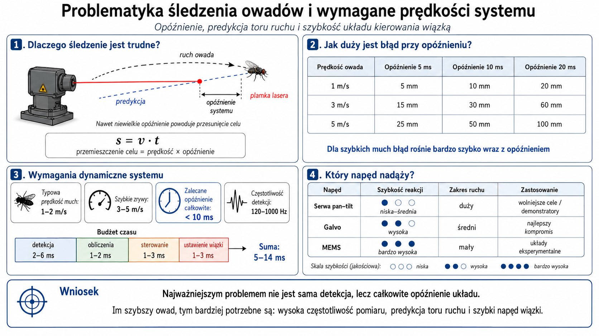
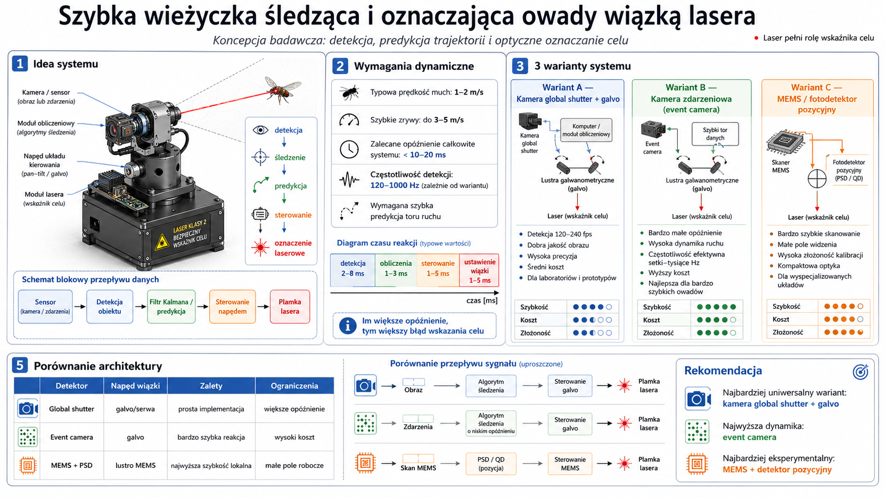

Mały obiekt, wysoka dynamika i bardzo krótki budżet czasu
Muchy zmieniają prędkość i kierunek gwałtownie. Skuteczność układu zależy nie tylko od trafnej detekcji, lecz przede wszystkim od sumy opóźnień kamery, obliczeń, transmisji i napędu wiązki.
Podstawowa zależność
Δs = v · Δt
Przy prędkości 3 m/s opóźnienie 10 ms powoduje przesunięcie celu o około 30 mm. Bez predykcji punkt wskazania pozostaje za rzeczywistym położeniem owada.
Źródła niepewności
- rozmycie ruchu i ograniczona rozdzielczość sensora,
- nieregularna trajektoria i nagłe przyspieszenia,
- opóźnienie ekspozycji, buforowania i transmisji,
- błąd kalibracji kamera–napęd–wiązka,
- czas ustalania położenia galvo, MEMS lub serw.

Dwuwarstwowa architektura: percepcja i sterowanie czasu rzeczywistego
Komputer wizyjny realizuje kosztowną analizę obrazu, natomiast mikrokontroler odpowiada za deterministyczne sterowanie napędem, watchdog i logikę bezpieczeństwa.
Interfejsy danych
- kamera → komputer: CSI‑2, USB3 Vision, GigE Vision lub PCIe,
- komputer → sterownik: USB CDC, UART, Ethernet UDP lub SPI,
- sterownik → galvo: dwukanałowy DAC i wzmacniacz wyjściowy,
- sterownik → serwa: PWM lub magistrala cyfrowa,
- interlock → moduł lasera: sprzętowe odcięcie linii ENABLE.
Zasada separacji funkcji
System operacyjny i aplikacja mogą wykrywać oraz przewidywać cel, ale nie powinny być jedynym mechanizmem bezpieczeństwa. Mikrokontroler musi przejść automatycznie do stanu SAFE_OFF po utracie komunikacji lub interlocku.
Pętla śledzenia z predykcją i kontrolą jakości estymacji
Model stanu
x = [px, py, vx, vy]ᵀ x(k+1) = F(Δt) x(k) + w(k) z(k) = H x(k) + v(k) p̂(t+L) = p(t) + v(t)L
Wersja podstawowa zakłada stałą prędkość. Dla częstych zmian kierunku można zastosować model stałego przyspieszenia lub filtr IMM łączący kilka modeli ruchu.
Kryteria poprawnego śledzenia
Każdy etap musi być mierzony znacznikiem czasu
Nominalna szybkość kamery nie wystarcza. Należy mierzyć opóźnienie „sensor-to-photon”, od ekspozycji do pojawienia się plamki w punkcie docelowym.
Cel podstawowy
< 15 ms dla demonstratora laboratoryjnego śledzącego owady siedzące i wolniejszy lot.
Cel zaawansowany
< 10 ms dla aktywnego śledzenia szybkich przelotów w ograniczonej objętości.
Cel eksperymentalny
< 3–5 ms z event camera, FPGA i galvo/MEMS, przy małym polu roboczym.
Architektura zależy od wymaganej dynamiki i pola roboczego
| Wariant | Sensor | Napęd | Latencja | Zalety | Ograniczenia |
|---|---|---|---|---|---|
| A. Uniwersalny | kamera global shutter 120–240 fps | galvo lub szybkie serwa | 8–20 ms | pełny obraz, proste debugowanie, umiarkowany koszt | opóźnienie klatkowe, rozmycie przy długiej ekspozycji |
| B. Wysokodynamiczny | event camera | galvo | 1–8 ms | bardzo mała latencja, wysoki zakres dynamiczny | koszt, trudniejsza rekonstrukcja i walidacja |
| C. Lokalny MEMS | PSD/QD + skaner | lustro MEMS | < 1–5 ms | kompaktowość i najwyższa szybkość lokalna | małe pole widzenia i złożona kalibracja optyczna |

Wspólna geometria kamery, napędu i płaszczyzny roboczej
Kalibracja kamery
Wyznaczenie parametrów wewnętrznych, dystorsji i czasu ekspozycji. Dla obszaru 3D potrzebny jest model głębi lub co najmniej założona płaszczyzna robocza.
Mapowanie punktu
Zebranie par (x,y) → (u,v), gdzie współrzędne obrazu odpowiadają napięciom galvo albo kątom osi. Dopasowanie homografii lub modelu wielomianowego.
Kompensacja dynamiczna
Pomiar czasu ustalania napędu i błędu zależnego od kierunku ruchu. Wprowadzenie feed-forward, histerezy i ograniczeń przyspieszenia.
Najpierw cele kontrolowane, dopiero później swobodnie latające owady
Plansza punktowa, pomiar dokładności i powtarzalności wskazania.
Znana prędkość liniowa 0,1–2 m/s, pomiar opóźnienia i błędu.
Ruch krzywoliniowy, przyspieszenia i zmienna prędkość kątowa.
Ocena recall, czasu utrzymania śladu i błędu punktu predykcji.
Metryki projektu
| Metryka | Znaczenie | Cel demonstratora |
|---|---|---|
| latencja sensor-to-photon | pełne opóźnienie układu | < 15 ms |
| RMSE punktu wskazania | średni błąd przestrzenny | < 10 mm w ROI |
| track retention | czas ciągłego utrzymania śladu | > 80% |
| false activation rate | błędne impulsy wskaźnika | < 1% |
| safe-off time | czas wyłączenia po błędzie | < 20 ms |
Budowa systemu krok po kroku
Poniższa procedura prowadzi od przygotowania stanowiska do pierwszego kontrolowanego testu śledzenia. Kolejne etapy należy wykonywać sekwencyjnie i zatwierdzać pomiarami.
Wybór architektury
Przed zakupem komponentów należy określić wymaganą dynamikę i pole robocze.
- Global shutter + galvo: wariant rekomendowany do pierwszego prototypu.
- Event camera + galvo: wariant do bardzo szybkich trajektorii i małej latencji.
- MEMS + PSD/QD: wariant eksperymentalny, przeznaczony do małego pola pracy.
Kryterium przejścia: wybrany sensor, napęd i zakres przestrzeni roboczej są wzajemnie zgodne.
Przygotowanie stanowiska
- zbuduj zamkniętą komorę lub wyznacz osłonięty obszar testowy,
- umieść matowe, ciemne tło i pochłaniacz wiązki,
- zamocuj kamerę i napęd na sztywnej wspólnej ramie,
- ogranicz mechanicznie zakres osi,
- dodaj E‑STOP i czujnik zamknięcia osłony.
Kryterium przejścia: wiązka w żadnym położeniu nie opuszcza bezpiecznej strefy.
Montaż mechaniczny
- Zamocuj kamerę tak, aby obejmowała całą strefę roboczą.
- Umieść napęd możliwie blisko osi optycznej kamery.
- Zamocuj moduł wskaźnika na uchwycie bez luzów.
- Dodaj ograniczniki osi i możliwość regulacji zerowej.
- Sprawdź, czy przewody nie ograniczają ruchu.
Wskazówka: sztywność ramy ma większe znaczenie niż dokładność pojedynczego serwa. Ugięcie konstrukcji bezpośrednio pogarsza kalibrację.
Połączenia elektryczne
- Podłącz kamerę do komputera wizyjnego.
- Połącz komputer z mikrokontrolerem przez USB/UART.
- Podłącz napęd do dedykowanego zasilacza.
- Podłącz sygnał ENABLE lasera przez sprzętowy interlock.
- Połącz E‑STOP i czujnik osłony jako styki normalnie zamknięte.
- Dodaj bezpieczniki i pomiar napięć.
Kryterium przejścia: odłączenie dowolnego elementu bezpieczeństwa wyłącza laser bez udziału aplikacji PC.
Instalacja oprogramowania
python -m venv .venv source .venv/bin/activate pip install -r requirements.txt python tracker.py --config config.yaml
W systemie Windows aktywacja środowiska odbywa się poleceniem:
.venv\Scripts\activate
Na pierwszym uruchomieniu pozostaw control.enabled: false.
Test kamery i detektora
- ustaw krótką ekspozycję,
- sprawdź rzeczywiste FPS,
- dobierz próg powierzchni obiektu,
- sprawdź maskę ruchu i liczbę fałszywych detekcji,
- wyłącz automatyczne buforowanie, jeśli sterownik kamery na to pozwala.
Kryterium przejścia: obiekt testowy jest wykrywany stabilnie przez co najmniej 80% czasu przejścia przez ROI.
Kalibracja mapowania obrazu na napęd
- Umieść matową planszę z siatką punktów w płaszczyźnie roboczej.
- Ustaw napęd w znanych położeniach.
- Zarejestruj położenie plamki w obrazie.
- Zbuduj zbiór par
(x,y) ↔ (pan,tilt)lub(u,v)dla galvo. - Dopasuj homografię albo model wielomianowy.
- Policz RMSE kalibracji.
# idea kalibracji samples = [ (x_img, y_img, pan, tilt), ... ] model_pan = fit_polynomial(x_img, y_img, pan) model_tilt = fit_polynomial(x_img, y_img, tilt) rmse = evaluate(samples)
Cel: RMSE poniżej 10 mm w głównym obszarze ROI lub poniżej 2–3 pikseli po reprojekcji.
Uruchomienie sterowania
Włącz komunikację z mikrokontrolerem bez aktywnego lasera. Najpierw sprawdź tylko ruch napędu i zgodność kierunków osi.
Pomiar opóźnienia
Zmierz czas od znacznika ekspozycji do osiągnięcia pozycji przez napęd. Wartość ta staje się parametrem predykcji lead_time_ms.
Test znacznika
Aktywuj laser tylko na nieruchomej planszy, z minimalnym czasem impulsu i działającym interlockiem.
Sekwencja pierwszego bezpiecznego uruchomienia
Napęd aktywny, laser odłączony lub wyłączony sprzętowo.
Sprawdzenie zakresów osi i ograniczników.
Otwarcie osłony i E‑STOP muszą wymuszać wyłączenie.
Krótki impuls na planszę kalibracyjną.
Znana prędkość, pomiar błędu i latencji.
Dopiero po spełnieniu kryteriów dokładności i bezpieczeństwa.
Lista kontrolna przed testem
Typowe problemy i diagnostyka
| Objaw | Możliwa przyczyna | Działanie |
|---|---|---|
| ślad drży | szum detekcji, zbyt mały proces noise | zwiększ filtrację lub dostrój Kalman |
| wiązka pozostaje za celem | zaniżone lead_time | zmierz pełną latencję i zwiększ predykcję |
| duży błąd na brzegach ROI | mapowanie liniowe | zastosuj model wielomianowy lub homografię |
| fałszywe detekcje | refleksy lub ruch tła | zmień oświetlenie, ROI i progi powierzchni |
| reset mikrokontrolera | zakłócenia od napędu | oddziel zasilania, dodaj filtrację i kondensatory |
SAFE_OFF.
Przykładowy zestaw elektroniczny do wariantu global shutter + pan–tilt lub galvo
Linki prowadzą do stron producentów lub renomowanych dystrybutorów. Dostępność i ceny mogą się zmieniać, dlatego przed zakupem należy ponownie sprawdzić zgodność napięć, interfejsów i wymagań mechanicznych.
| Blok | Przykładowy element | Rola | Połączenie | Odnośnik |
|---|---|---|---|---|
| Komputer wizyjny | Raspberry Pi 5 | Detekcja, tracking, predykcja i komunikacja | kamera przez CSI; STM32 przez USB/UART | Produkt |
| Kamera | Raspberry Pi Global Shutter Camera | Rejestracja szybkiego ruchu bez artefaktów rolling shutter | złącze CSI; w Pi 5 wymagany właściwy kabel kamery | Produkt |
| Sterownik czasu rzeczywistego | NUCLEO‑G431RB | Watchdog, sterowanie osiami, interlock i telemetria | USB CDC lub UART 3,3 V | Producent DigiKey |
| Sterownik serw | Adafruit PCA9685 | 16 kanałów PWM dla napędu pan–tilt | I²C: SDA, SCL, 3,3 V logiki; osobne zasilanie serw | Produkt Instrukcja |
| Pomiar zasilania | Adafruit INA219 | Pomiar prądu i napięcia gałęzi napędu | I²C; rezystor pomiarowy w dodatniej gałęzi | Produkt |
| DAC dla galvo | TI DAC8562 | Dwa precyzyjne kanały analogowe do zadawania X/Y | SPI z STM32; wyjścia przez stopień dopasowujący | Produkt |
| Zasilanie SBC | Oficjalny zasilacz USB‑C Raspberry Pi 27 W | Stabilne zasilanie Raspberry Pi 5 | bezpośrednio USB‑C | Produkt |
| Zasilanie serw | Przetwornica 12 V → 6 V, co najmniej 5–10 A | Niezależne zasilanie napędu | V+ PCA9685/serwa; masa wspólna z logiką | dobór do prądu zablokowanych serw |
| Bezpieczeństwo | E‑STOP NC + krańcówka osłony NC + przekaźnik bezpieczeństwa | Sprzętowe odcięcie ENABLE wskaźnika | szeregowy łańcuch styków normalnie zamkniętych | komponenty przemysłowe z dokumentacją |
| Wskaźnik optyczny | Certyfikowany moduł klasy 1 lub odpowiednio obudowany produkt klasy 2 | Wyłącznie optyczne oznaczenie celu | zasilanie przez sprzętowy interlock i linię ENABLE | dobór po ocenie bezpieczeństwa stanowiska |
Jak podłączyć poszczególne moduły
Raspberry Pi 5 ↔ Global Shutter Camera
- Wyłącz zasilanie Raspberry Pi.
- Wsuń właściwy kabel CSI do złącza CAM/DISP.
- Drugą stronę podłącz do kamery, zachowując orientację styków.
- Po uruchomieniu sprawdź kamerę poleceniem
rpicam-hello. - Dla krótkiej ekspozycji zapewnij intensywne, równomierne oświetlenie.
rpicam-hello --timeout 0 rpicam-vid --width 1280 --height 720 \ --framerate 120 --shutter 500 \ --codec yuv420 -o test.yuv
Raspberry Pi ↔ PCA9685 ↔ serwa
Raspberry Pi PCA9685 3V3 ------------> VCC GND ------------> GND GPIO2 / SDA ------> SDA GPIO3 / SCL ------> SCL Zasilacz 6 V + ----> V+ Zasilacz 6 V - ----> GND Serwo PAN --------> kanał 0 Serwo TILT -------> kanał 1
Nie zasilaj serw z pinu 5 V Raspberry Pi. Masa zasilacza serw musi być wspólna z masą logiki, ale przewody prądowe powinny być prowadzone osobno.
Raspberry Pi ↔ NUCLEO‑G431RB
Najprostsze połączenie wykorzystuje port USB ST‑LINK/Virtual COM Port. Alternatywnie można użyć UART 3,3 V.
Raspberry Pi / USB ---- NUCLEO USB lub: GPIO14 TX -----------> RX STM32 GPIO15 RX <----------- TX STM32 GND -----------------> GND
Nie podawaj sygnału 5 V na wejścia STM32. Protokół powinien zawierać numer sekwencji, timeout i komendę SAFE_OFF.
STM32 ↔ PCA9685
STM32 PCA9685 3V3 --------------> VCC GND --------------> GND I2C_SDA ------------> SDA I2C_SCL ------------> SCL OE -----------------> opcjonalny pin awaryjny
Wejście OE można wykorzystać do natychmiastowego wyłączenia wszystkich kanałów PWM. W stanie błędu powinno być wymuszane sprzętowo.
STM32 ↔ DAC8562 ↔ sterownik galvo
STM32 DAC8562 3V3/5V ------------> DVDD zgodnie z modułem GND ----------------> GND SPI_SCK ------------> SCLK SPI_MOSI -----------> DIN GPIO_CS ------------> SYNC GPIO_LDAC ----------> LDAC VOUTA ---> wzmacniacz/dopasowanie ---> GALVO X VOUTB ---> wzmacniacz/dopasowanie ---> GALVO Y
Wejścia galvo często wymagają zakresu bipolarnego, np. ±5 V lub ±10 V. Sam DAC8562 nie powinien być łączony z takim wejściem bez stopnia analogowego i sprawdzenia dokumentacji konkretnego sterownika.
Łańcuch interlocku
+V ENABLE | [klucz NC] | [E-STOP NC] | [osłona NC] | [watchdog / przekaźnik] | ENABLE modułu wskaźnika
Otwarcie dowolnego styku musi wyłączać moduł. Program może jedynie dodać kolejny warunek logiczny; nie powinien omijać tego łańcucha.
Fragmenty programu dla kolejnych bloków systemu
Przykłady mają charakter referencyjny. Parametry progów, ekspozycji i predykcji wymagają dostrojenia na rzeczywistym stanowisku.
1. Otwarcie kamery z małym buforem
import cv2
cap = cv2.VideoCapture(0, cv2.CAP_V4L2)
cap.set(cv2.CAP_PROP_FRAME_WIDTH, 1280)
cap.set(cv2.CAP_PROP_FRAME_HEIGHT, 720)
cap.set(cv2.CAP_PROP_FPS, 120)
cap.set(cv2.CAP_PROP_BUFFERSIZE, 1)
if not cap.isOpened():
raise RuntimeError("Nie można otworzyć kamery")
while True:
ok, frame = cap.read()
if not ok:
break
2. Detekcja małego obiektu ruchem
bg = cv2.createBackgroundSubtractorMOG2(
history=150,
varThreshold=20,
detectShadows=False
)
gray = cv2.cvtColor(frame, cv2.COLOR_BGR2GRAY)
gray = cv2.GaussianBlur(gray, (3, 3), 0)
mask = bg.apply(gray, learningRate=0.002)
_, mask = cv2.threshold(mask, 180, 255,
cv2.THRESH_BINARY)
contours, _ = cv2.findContours(
mask, cv2.RETR_EXTERNAL,
cv2.CHAIN_APPROX_SIMPLE
)
candidates = [
c for c in contours
if 3 <= cv2.contourArea(c) <= 300
]
3. Wyznaczenie centroidu
def centroid(contour):
m = cv2.moments(contour)
if abs(m["m00"]) < 1e-9:
return None
x = m["m10"] / m["m00"]
y = m["m01"] / m["m00"]
return float(x), float(y)
points = [
centroid(c) for c in candidates
]
points = [p for p in points if p is not None]
4. Filtr Kalmana i predykcja
import numpy as np
import cv2
kf = cv2.KalmanFilter(4, 2)
kf.measurementMatrix = np.array([
[1, 0, 0, 0],
[0, 1, 0, 0]
], np.float32)
def set_dt(dt):
kf.transitionMatrix = np.array([
[1, 0, dt, 0],
[0, 1, 0, dt],
[0, 0, 1, 0],
[0, 0, 0, 1]
], np.float32)
def predict_ahead(state, lead_s):
x, y, vx, vy = state.reshape(-1)
return x + vx * lead_s, y + vy * lead_s
5. Bramkowanie najbliższej detekcji
import math
def associate(predicted, detections, max_jump=120):
if not detections:
return None
px, py = predicted
best = min(
detections,
key=lambda p:
(p[0] - px)**2 + (p[1] - py)**2
)
distance = math.hypot(
best[0] - px,
best[1] - py
)
return best if distance <= max_jump else None
6. Mapowanie obrazu na kąty pan–tilt
def image_to_angles(x, y, width, height,
pan_min=15, pan_max=165,
tilt_min=20, tilt_max=160):
nx = min(max(x / (width - 1), 0), 1)
ny = min(max(y / (height - 1), 0), 1)
pan = pan_min + nx * (pan_max - pan_min)
tilt = tilt_max - ny * (tilt_max - tilt_min)
return pan, tilt
7. Komunikacja szeregowa z mikrokontrolerem
import serial
port = serial.Serial(
"/dev/ttyACM0",
baudrate=115200,
timeout=0.02
)
def aim(pan, tilt):
command = f"AIM,{pan:.2f},{tilt:.2f}\n"
port.write(command.encode("ascii"))
def safe_off():
port.write(b"SAFE_OFF\n")
8. Sterowanie PCA9685 w Pythonie
from adafruit_servokit import ServoKit
kit = ServoKit(channels=16)
kit.servo[0].set_pulse_width_range(500, 2500)
kit.servo[1].set_pulse_width_range(500, 2500)
def set_pan_tilt(pan, tilt):
kit.servo[0].angle = pan
kit.servo[1].angle = tilt
Przed użyciem ustaw zakres impulsów zgodnie z dokumentacją konkretnych serw i ogranicz kąty mechanicznie.
9. Logika bezpiecznej aktywacji
def allow_marker(track, predicted, system):
return (
track.frames >= 5
and track.position_covariance < 25.0
and system.inside_safe_zone(predicted)
and system.cover_closed
and not system.estop_pressed
and system.actuator_ready
)
if allow_marker(track, predicted, system):
controller.marker_pulse(25)
else:
controller.safe_off()
10. Logowanie latencji
import csv
import time
with open("latency.csv", "a", newline="") as f:
writer = csv.writer(f)
t_capture = time.perf_counter_ns()
# detekcja i predykcja
t_command = time.perf_counter_ns()
writer.writerow([
frame_id,
t_capture,
t_command,
(t_command - t_capture) / 1e6,
predicted_x,
predicted_y
])
11. Firmware: watchdog i SAFE_OFF
constexpr uint32_t WATCHDOG_MS = 150;
uint32_t lastCommandMs = 0;
void safeOff() {
digitalWrite(LASER_EN_PIN, LOW);
digitalWrite(PWM_OE_PIN, HIGH);
}
void loop() {
if (!interlockOk()) {
safeOff();
}
if (millis() - lastCommandMs > WATCHDOG_MS) {
safeOff();
}
readAndProcessSerial();
}
12. Sterowanie DAC8562 — pseudokod STM32
void Galvo_Set(uint16_t x, uint16_t y) {
HAL_GPIO_WritePin(SYNC_GPIO_Port,
SYNC_Pin, GPIO_PIN_RESET);
DAC8562_WriteChannel(CHANNEL_A, x);
DAC8562_WriteChannel(CHANNEL_B, y);
HAL_GPIO_WritePin(SYNC_GPIO_Port,
SYNC_Pin, GPIO_PIN_SET);
Pulse_LDAC();
}
Rzeczywista ramka SPI zależy od konfiguracji DAC8562 i powinna być zaimplementowana zgodnie z dokumentacją układu.
Python + OpenCV oraz firmware sterownika
Pipeline aplikacji
frame, timestamp = camera.read()
detections = detector(frame)
track = associator.update(detections)
state = kalman.correct(track)
target = predict(state, total_latency)
command = calibration.map(target)
if safety.valid(track, target):
controller.aim(command)
else:
controller.safe_off()Protokół sterowania
AIM,pan,tilt LASER,25 SAFE_OFF STATUS?
Wersja produkcyjna powinna rozszerzyć protokół o numer sekwencji, znacznik czasu, sumę kontrolną, potwierdzenie wykonania i telemetrię pozycji napędu.
Stan bezpieczny
Brak komunikacji, utrata celu, przekroczenie strefy lub błąd napędu zawsze prowadzą do SAFE_OFF.
Ograniczenie przestrzeni
Zakres osi powinien być ograniczony mechanicznie, programowo i przez stały pochłaniacz wiązki.
Rejestracja
Należy zapisywać znaczniki czasu, pozycję celu, komendy napędu, stan interlocku oraz przyczynę każdego wyłączenia.
Kod demonstracyjny i konfiguracja
Pakiet zawiera tracker OpenCV, filtr Kalmana, konfigurację YAML, firmware Arduino oraz instrukcję uruchomienia.
Instrukcja
Dokładny opis tekstu, diagramy i przykłady kodu.